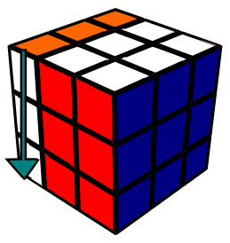
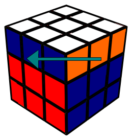

-
R
R e o movimento da lateral direita para cima
-
L
L e o movimento da lateral esquerda para baixo
-
U
U e o movimento do topo para esquerda
-
D
D e o movimento da parte de baixo para direita
-
F
F e o movimento da parte da frente para baixo
-
B
B e o movimento da parte de tras para cima
-
R'

toda vez que o movimento tiver aspas ele vai ser o movimento contrario do original ou seja se ele ia para cima com aspas ele vai para baixo
-
R2
toda vez que o movimento tiver um numero do lado a quele numero sera o numero de vezes que o movimentos sera executado
-
R'2

R'2 e a junção dos ultimos dois movimentos ou seja ele vai duas vezes para baixo